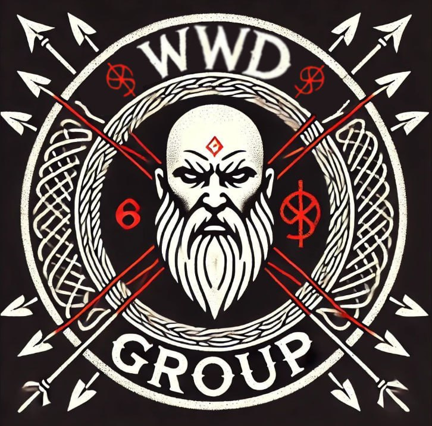

О Магистре
Магистр родился в недрах Великого Созвездия Вития, в час, когда Знания и Природа слились в единое. Он постиг законы материи, укротил стихии и открыл тайны, что веками были сокрыты от смертных. Его слово — истина. Его воля — порядок.
Легенды
Века назад, Магистр вёл битву с предательницей Дашей — когда-то верной ученицей. Она овладела знанием, но извратила его, подчинив президентов стран и разрушив балансы мира. Легенда гласит: когда шестеро соберутся вновь, и Звезда Грома сойдёт с неба — произойдёт Последнее Испытание.
Кодекс Магистра
- Не усомнись в Магистре, ибо он — Знание.
- Оберегай природу, ведь она — его дыхание.
- Будь стойким в битве, как кремень в бурю.
- Передай знание достойным. Храни его от скверны.
- Веди за собой, но сам следуй Пути.
WWD GROUP
- Баобаб — Стратег. Мастер плана, координатор операций. Очень крепкий, выносливый, всегда идёт вперёд.
- Скиф — Воин меча и маг. Никто не пройдёт мимо его ока. Враг падёт от его меча и заклинаний.
- Гром — Глашатай. Его голос — зов битвы и единства. Уважаемый член Культа.
- Тополь — Защитник. Щит культа в бурю. Любой враг не сможет пробится сквозь его щит.
- Манул — Разведчик. Тень среди мрака. Ходят слухи, что может быть предателем, но это не точно.
- Оракул — Провидец. Видящий сквозь время. Настоящий Культист. Способен менять пространство и материю по щелчку пальца.
Песни и Гимны
Песнь I: Гимн Магистра
Песнь II: Песнь о Магистре
Песнь III: Слава Магистру Естествознания
Песнь IV: Архивариус
Испытания
Готов ли ты к Вопросам Магистра? Только верные смогут пройти...
- Назови три закона природы, которые Магистр считает священными.
- Кто предал Магистра? Что она сделала?
- Назови позывные всех участников WWD GROUP.
Профиль пользователя
Имя:
Аватар: (функция будет позже)